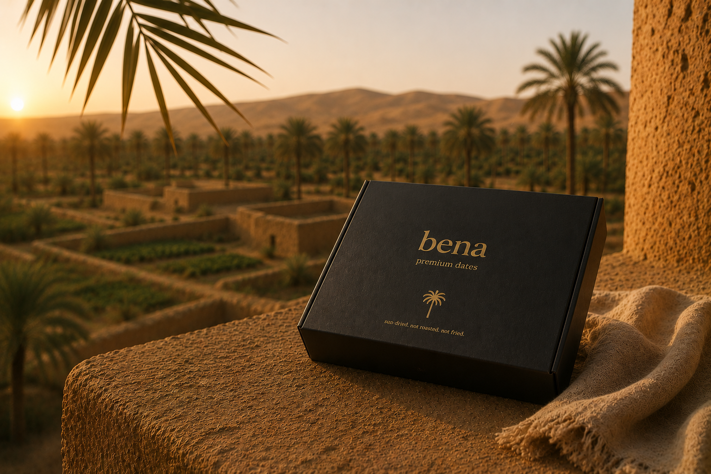
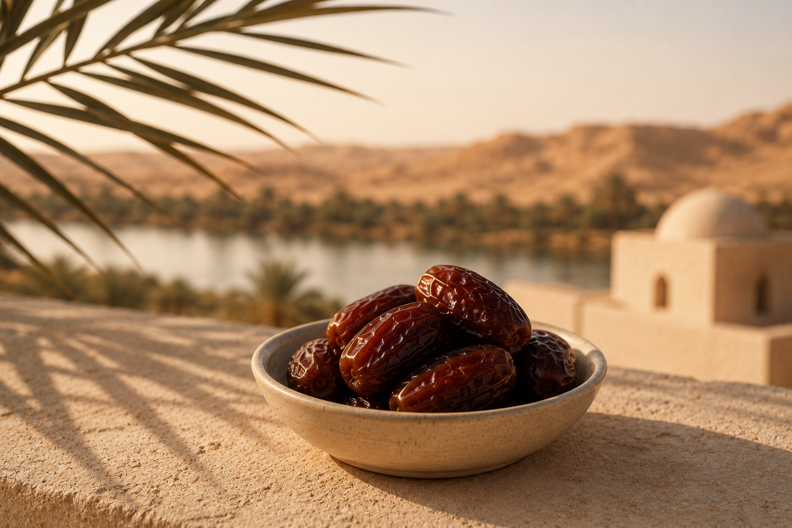
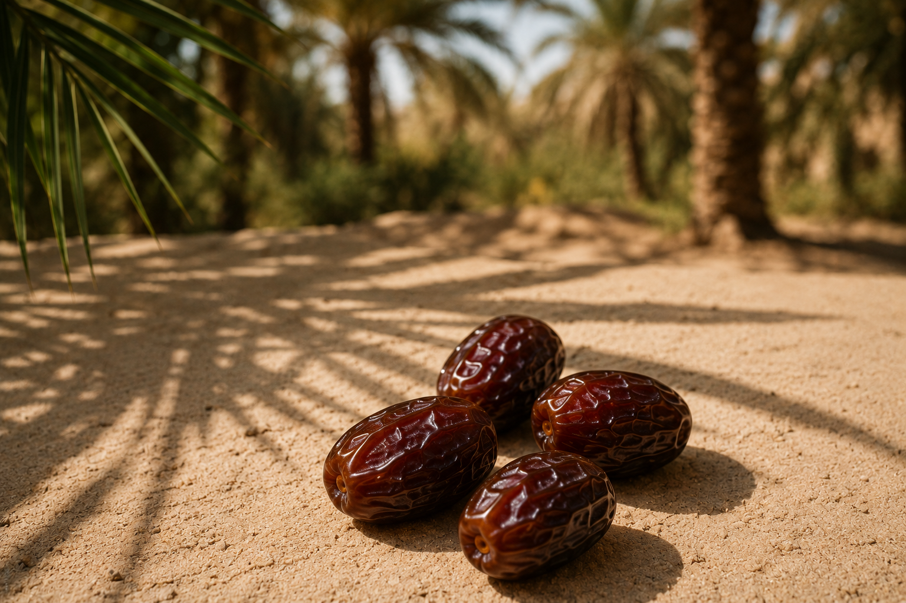

Premium Medjool
CHF 14.90
Premium Datteln aus dem Süden Ägyptens — nachhaltig angebaut, fair gehandelt und direkt von unserer Familie.
Jetzt entdeckenAus Aswan, Ägypten 🇪🇬

Premium Datteln aus dem Süden Ägyptens — nachhaltig angebaut, fair gehandelt und direkt von unserer Familie.
Jetzt entdeckenAus Aswan, Ägypten 🇪🇬
WHY BENA
Bena verbindet hochwertige Premium-Datteln mit nachhaltiger Landwirtschaft, fairer Zusammenarbeit und echter Herkunft aus dem Süden Ägyptens.
Unsere Datteln stammen direkt aus dem Süden Ägyptens — aus einer Region mit idealem Klima für Premium-Datteln.
Wir möchten langfristige Perspektiven und faire Arbeit vor Ort schaffen — transparent und nachhaltig.
Sonne, Wüste und nährstoffreiche Böden sorgen für intensiven Geschmack und natürliche Qualität.

NATÜRLICHE VORTEILE
Datteln werden seit Jahrhunderten als natürliche Energiequelle geschätzt. Sie enthalten wichtige Mineralstoffe, Ballaststoffe und natürliche Süße — ganz ohne raffinierten Zucker.


Natürlich & ohne künstliche Zusätze
Herkunft aus dem Süden Ägyptens
Nachhaltige Zusammenarbeit & transparente Herkunft
Handverlesene Qualität mit natürlicher Süße

OUR STORY
Bena entstand aus der Verbindung zweier Welten: der Wärme Südägyptens und dem Wunsch, ehrliche Produkte modern neu zu denken. Unsere Wurzeln liegen in Aswan — einer Region, in der Landwirtschaft, Sonne und Dattelpalmen seit Generationen zum Alltag gehören. Mit Bena möchten wir hochwertige Produkte, echte Herkunft und modernes Design verbinden.
SCHNELLE LIEFERUNG
Wir liefern schnell und zuverlässig innerhalb der Schweiz. Ab einem Bestellwert von CHF 89 ist der Versand kostenlos.
Deine Bestellung wird sorgfältig verpackt und direkt aus unserem Lager versendet.
CUSTOMER EXPERIENCE
Die Qualität hat mich wirklich überrascht. Sehr weich, natürlich süss und wunderschön verpackt.
Man merkt sofort, dass hinter der Marke eine echte Geschichte steckt.
Endlich eine moderne Dattelmarke, die hochwertig und authentisch wirkt.
CHF 14.90